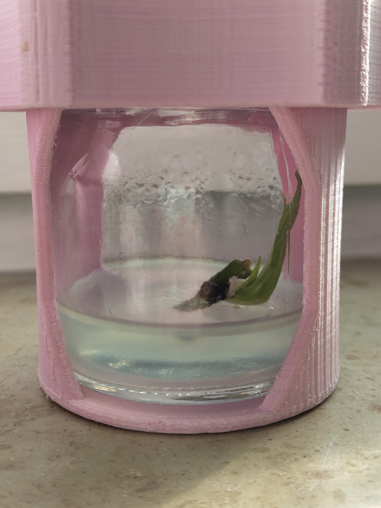
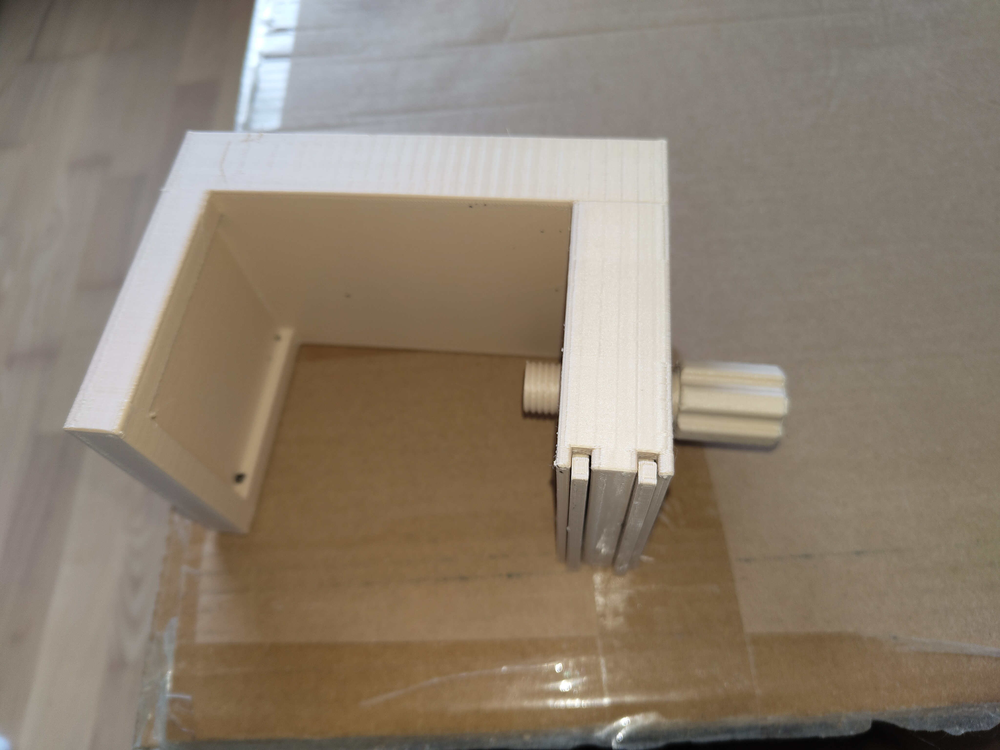
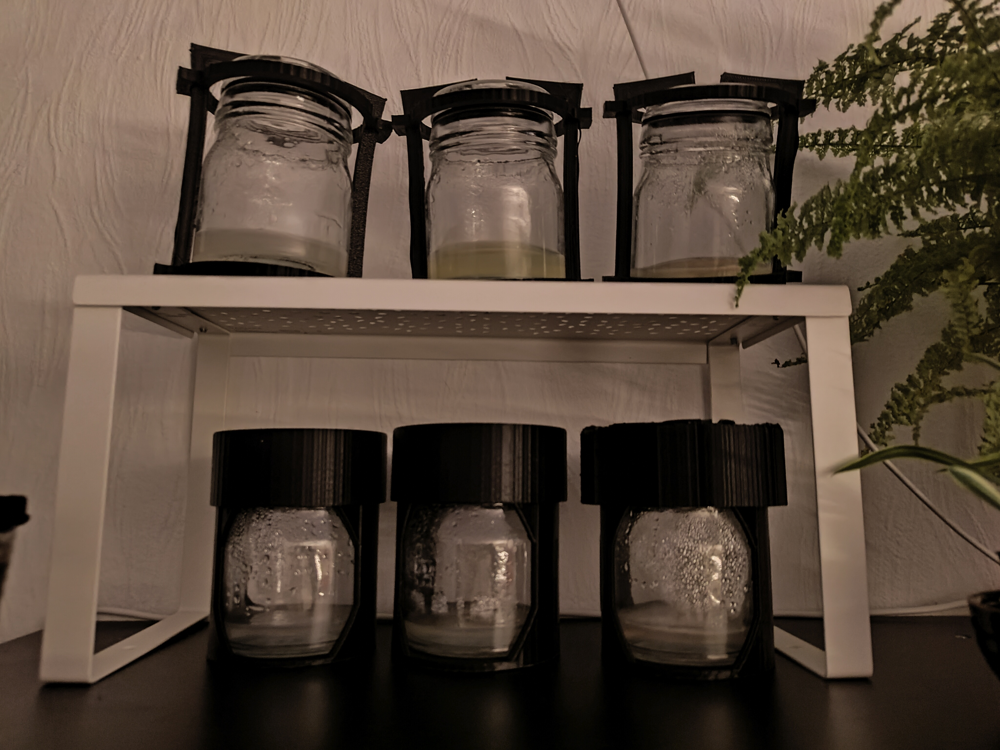
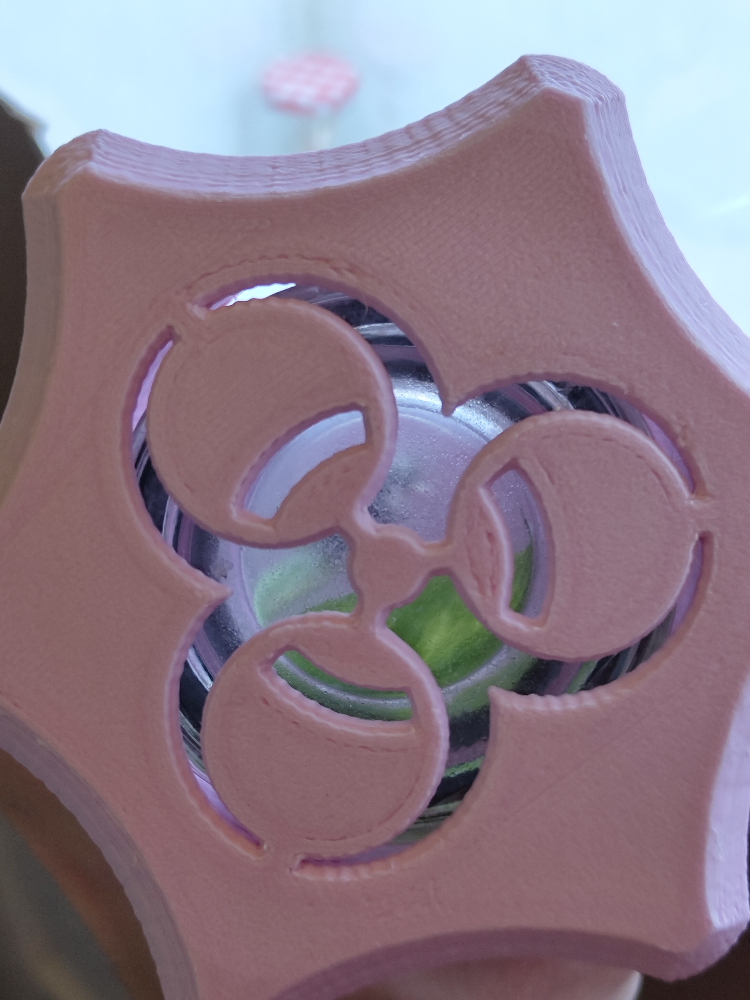
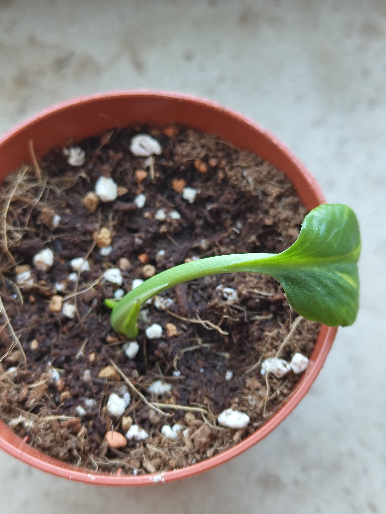

Plant-Clones

This is a cloned Epipremnum aureum, or in normal english, a golden photos.
Plant Tissue Culturing
Plant tissue culturing is the process of taking a piece of some plant (which is not a seed) and growing a whole new plant just from this piece. To ensure no contamination spoils the plant piece before it can grow, it goes through cleaning processes and lastly is placed in a controlled sterile environment.
Challenges
It sounds much easier than what it actually is. Available to me, is basic kitchen equipment and my goal is to do something that normally is done in lab enviroments, so I got creative.
At first, I got myself a pressure cooker that is comparable, if not similar, to an autoclave in terms of being able to sterilize whatever you put in there, using heat and pressure. Its space is limited, but its sterilization is on point.
The next critical moment is the transfer. I must have a place in which no air contaminents would land on my plant or the insides of my container. For this, I have created an airbox where the air movements are reduced, added a HEPA filter with a fan, to have positive air pressure, so air wants to go out. In the core, it is the same technique used in those laminar flow cabinets in the lab, with the difference being in price and quality. The price difference is absolutely massive, because those professional benches sell for over 1000€, while mine is some plastic, hot glue, a filter, and a CPU fan, costing under 50€. In my opinion, those benches are overselling it, as are 90% of all lab devices.
Lastly, the challenge is to have containers that you on one hand can sterilize in the autoclave, while also being sealable so the outside air does not mix with the inside’s air. I have had massive problems with contamination in multiple places along the journey. For containers I therefore choose glass that I had lying around, and a 3d printed cap system to add pressure to the top cap. It took a few prototypes, but the final pink design finally got it done well.
As a neat side-note, I was using the stirring machine, I’ve build just before, so it was really useful here
Airbox

It has the CPU fan with the HEPA filter for creating pressure. Additionally, it also has rgb lighting. Both the fan and lighting can be controlled using those two red touch sensors. They are special because they are designed so you can use them from the inside by pressing on the plastic. So you can control the fan speed and lighting without needing to restilize your hands, and on the insides you can wipe the surfaces down with ease.
Containers

First idea to have a screw that comes from the top. It didn’t work because the screwing was uneven and too weak. Also just look at the amount of plastic used - no good.

Here you can see a few iterations. The top were at first some scraped parts which gave me this idea of applying tension using the pla by bending it. It did work acceptibally, but was finicky to setup. Sometimes the plastic overbends, it doesn’t hold it well enough, etc. After that I moved back to screwing mechanisms, but now I made a whole cap, you can screw on. The plastic was rubbing heavily onto each other, but with a few turns, the prototypes opened and closed well enough. Sometimes it got stuck and I wasn’t able to apply enough rotational force to get the cap off.

This is the final prototype which was finally ergonomic and had the pressured cealing that was adequate for my use. Pink because it suits the aestethics. The biohazard symbol has no meaning and also was just aesthetics.
Failed Attempts
Unfortunately, the progression was slow because I had no lab experience, did not understand what was even happening, and asking the internet felt unnecessary if you tell them all lab devices are diys. I still learned a lot every couple tries, and after six months I finally made it and had a plant that was actually growing in my container. Below it all you can see my logs and discoveries I made along the way and what I’ve tried. These are a lot of tries, tbh, and even the plant you see planted in dirt did not survive because its environment changes too quickly.

Protocol Used
- Prepare media by stirring:
- 180ml dest. water (30ml per container, 45ml per container if transferring for easier orthogonal placement of explant)
- (450µg BAP, 75µg per container)
- 5.4g Sugar
- 1.44g Agarose
- 0.79g M&S
- Adjust pH to 5.8 (about 150µl of HCl 3.5%)
- Start Autoclave:
- Fill (1) into jars equally, cover with aluminium
- Put Forceps and Scalpel/Scissors
- Run it for 15min
- Prepare Plant shoots:
- Cut shoots (with autoclaved tools)
- Wash in tap water
- Wash in 70% Ethanol for 30 seconds
- Wash in 0.5% bleach (and small drop of dish soap) for 15 minutes (best in closed small container)
- Wash in destilled water
- Prepare airbox, inside should be:
- 6 glass jars with media
- Cutting place
- Cutting tools
- Water with 6 shoots
- Transfer (if media is solid):
- Cut parts of the shoots that are bleached
- Place inside jars
My logs
Golden Photos
09.05.2026 Zeus transfer 1
- Transfer process into new container. The nodes that were in BAP, will again be in BAP
- Only using 3 new media containers, so everything divided by 2
- The explants were only transferred and not touched at all
- After autoclaving, aluminum oxide settled on the cap and the forceps. It shouldn’t make a sterility difference, or a toxicity difference, so it was kept
11.04.2026 “Zeus”
- Only 3 explants were taken: two nodes and one normal stem between.
- One node was placed in BAP (blue agar medium), the other one without using BAP (colorless agar medium)
Results:
- Both nodes showed growth FINALLY
- Due to its structure and placement the node without BAP grew first, straight up. The second node which was placed in BAP, first only showed a small bulb on the side, but then quickly exploded in growth upwards.
06.04.2026
- Change recipe to hydrogenperoxide from bleach 0.5%
- If BAP is added, methylene blue is added as well (to test effects of BAP)
- Using 0.6% of bleach for 18 minutes
Results:
- Contamination for all samples
- The plant had extra brown parts which were not removed (to test effects). These lead to contamination through fungus spores hidden in those.
Improvements for next time:
- Using real bleach that is active (freshly bought) and with a known concentration
20.03.2026
- M&S 0.86g instead of 0.79g
- Sugar 5.44g instead of 5.4g
- Added parts of methylene blue in 3 containers just for fun
Results:
- White mold
- 2 Containers did not have any explant and remained totally clean
- Explants went black due to contamination
- Bleach has lost effectiveness over time. The bleach I’ve used could already have been inactive through light, time, oxidation or something else
Improvements for next time:
- Use fresh bleach or hydrogenperoxide
Fitonia albivenis
01.03.2026
- No BAP
- Using full M&S
- No 70% Ethanol cleaning
- Using 1.5 g/L of cinnamon powder => 0.27
- Using half tablet of activated charcoal
- It is a complete mess having small chunks of charcoal, cinnamon, and agar floating around. This is why I adjusted the pH by using 100µl HCl, because previously around 100-200µl was enough.
- 12 minutes of bleach
Results:
- Fungus all around the plant, spreading to the rest of the full media
- The plants did not root or grow, but they were not mushy and still stayed stable. This could mean that the toxicity decreased slightly, but fungus still spreads
Improvements for next time:
- Test water by using expensive distilled water
- Use other plants
- Use other containers that don’t have silicon rings for creating a tight ceil
21.02.2026
- Growing without artificial light, room temp conditions
- Using half of M&S
- Using BAP
- Adjusting pH before adding agarose
- Using white veined plant, not pink veined as before
- Cooled down autoclaved things with minimal gap
- Used Isopropanol to desinfect containers before adding destilled water
- Using only fully autoclaved tools in airbox
- More effective desinfection of gloves
Results:
- Browning of plants
- No roots, no nothing
Improvements for next time:
- Something in the process is either toxic to the plants because of unexpected side substances or the washing procedure is not strong enough. I believe that the material I’m using, has side products.
- Don’t use BAP for now
09.02.2026
- Growing in room temperature conditions
- Growing without artificial light in a not all to good lit place
- Using half of the M&S as above (so 0.33g)
- Not using BAP at all
- Adjusted to have slightly more sugar (from 25 g/L to 30 g/L)
- 100µl sulfuric acid
- Used 6ml NaClOH 2.1% in 18ml water to get about 0.5% bleach
- Used active charcoal 125mg
Results:
- Mold set on the plants. So the airbox, washing water, or tools were not sterile enough
- My guess is because the bleach solution was not being shaked enough (only about twice during the whole time period)
Improvements for next time:
- Maybe adjusting pH without agarose is easier
- Agarose didn’t solidify in all containers, a few ones do and others don’t. Completely evenly distribute the agar and maybe even melt it before and then distribute.
- Need more ml per container, changing amount from 150ml to 180ml
- Active charcoal did not disolve and stayed as grains
- The bleach had odd particles floating inside (context: the bleach was filled into a new cheap plastic bottle).
10.01.2026 again
- Precise BAP
- Used 200µl 3.5% HCl to perfectly get it to the pH
- Extra seal for the glass jars with plastic wrap
- Growing under warm conditions in direct sunlight
- Used to little bleach (a tiny bit of 2.1% compared to 0.5%)
Results:
- Roots seemed to have formed, but for some reason it didn’t grow any further after a week. In reality these were not roots, it was the brown mushing and disolving of the plants
- The plants got fully disolved or were really mushy, a brown color is all that is left
Improvements for next time:
- Adjust media amount from 250ml dest. water to 150ml dest. water
- Agarose was too concentrated because gas formed under and wasn’t able to escape. Changed from 1.1% to 0.7%
- Adjusted bleach cleaning from 10 minutes to 15 minutes
- Be more careful with the addition of sulfuric addition
- Bleach was not bleachy enough
10.01.2026
- Pressure cooker for sterilizing
- Using much less BAP not like previously 0.54g, uses was as little as possible on a spoon
- Airbox is not sealed tight with extra overpressure through ventilation system with HEPA filters
- Agar Media was too much for the 6 glass jars
- pH adjustment was difficult as the digital meter kept changing whenever it was removed and inserted again
Results:
- Agar didn’t form, because of having too much medium prepared of which not all has been used. Agar is left at the bottom and was not really poored in. -> Use all of it
- Still too much medium
Improvements for next time:
- Dillute BAP to reach mg amounts instead of eye balling
- Adjust media amount from 360ml dest. water to 250ml dest. water
- Adjust pH slightly more aggressive with 1ml after 1ml, instead of µls
Second Try
- Airbox was tightened
- 3d case for the glass jars were prototyped
- Transfer process was reduced to a few centimeters
Results:
- Everything failed
First Try
I’ve decided to start with tissue culture and my goal is to upkeep a plant culture for at least a year. I’ll go through the book “plants from test tubes: an introduction to micropropagation”